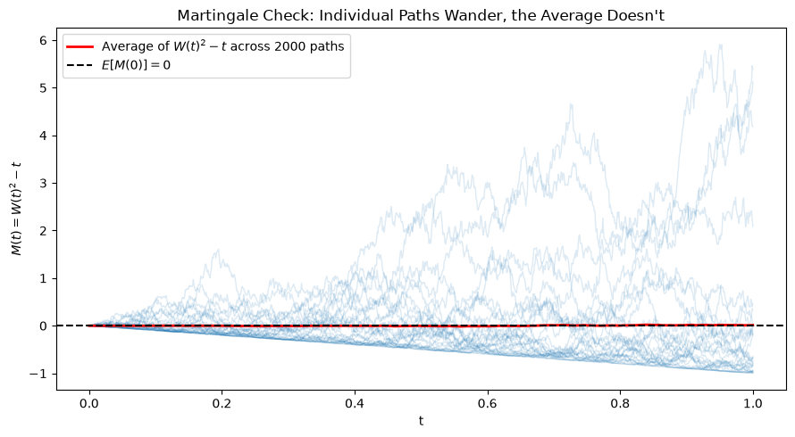
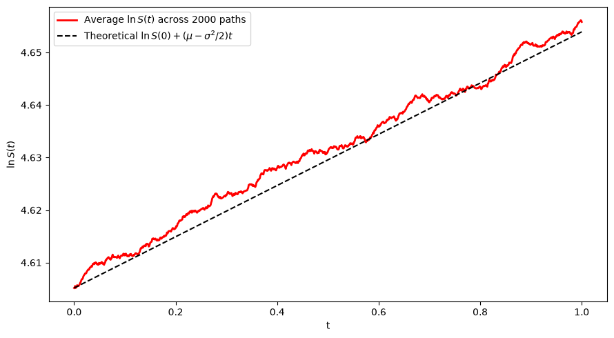

Modules 7–8 gave us two continuous-time building blocks, used for CS 3:
Poisson processN(t) — models when discrete events happen
Brownian motionW(t) — models continuous price movement
And a combined model for a fair-value price, X(t) = X(0) + \mu t + \sigma W(t): a starting price X(0), a deterministic drift \mu per unit time, and volatility \sigma scaling the randomness contributed by W(t).
The Case Study for This Part: Options Trading
CS 4: Options Trading — pricing a European option, calibrating the model to real option prices, and understanding where the model breaks down.
Pricing an option isn’t just “simulate the stock price and average the payoff.” Doing it rigorously (and matching the classic Black-Scholes formula in Module 10) needs two more tools:
Martingales — the precise mathematical notion of a “fair game,” which is what makes an arbitrage-free price well defined
Itô’s lemma — the chain rule for functions of Brownian motion, needed because ordinary calculus doesn’t apply to W(t)’s jagged paths
What’s Still Missing
We can already simulate W(t). But two questions block us from pricing options with it:
If a stock price follows X(t) = X(0) + \mu t + \sigma W(t), what does \ln X(t) look like? Ordinary calculus says “just apply the chain rule” — but W(t) is nowhere differentiable, so the ordinary chain rule doesn’t apply.
What does it even mean for a price to be “fairly priced” with no free lunch? We need a precise definition of a fair game.
This module builds both tools. Module 10 uses them to derive Black-Scholes; Module 11 implements it and studies where it fails.
Part 2: Martingales
Defining a Fair Game
A stochastic process \{X(t)\}_{t \geq 0} is a martingale (with respect to the information available up to time t) if:
E[|X(t)|] < \infty for all t
E[X(t+s) \mid \mathcal{F}_t] = X(t) for all s > 0
In words: given everything known up to now, the best forecast of the future value is today’s value. No drift, no predictable edge — a fair game.
This is exactly the property an arbitrage-free, discounted asset price must have under the right probability measure — the idea Module 10 builds on directly.
Examples We Already Know
Symmetric random walkS_n = \sum_{i=1}^n Z_i, Z_i \in \{-1, +1\} with equal probability: E[S_{n+1} \mid S_n] = S_n.
Standard Brownian motionW(t): independent, mean-zero increments give E[W(t+s) \mid \mathcal{F}_t] = W(t) + E[W(t+s) - W(t)] = W(t).
Compensated Poisson processN(t) - \lambda t: subtracting off the deterministic drift \lambda t turns the (non-martingale) Poisson counting process into a martingale.
Brownian motion with drift is not one:X(t) = \mu t + \sigma W(t) has E[X(t+s)\mid\mathcal{F}_t] = X(t) + \mu s \neq X(t) unless \mu = 0.
The last bullet matters: a real stock price has drift, so it isn’t a martingale — but a specific transformation of it will be, and that transformation is what pricing formulas are built on.
Checking It by Simulation
If M(t) is a martingale, E[M(t)] = E[M(0)] for every t — the average across many simulated paths should stay flat, even though any single path wanders.
import numpy as npimport matplotlib.pyplot as pltnp.random.seed(5005)T, n, n_paths =1.0, 1000, 2000dt = T / nt_grid = np.linspace(0, T, n +1)increments = np.random.normal(scale=np.sqrt(dt), size=(n_paths, n))W = np.concatenate([np.zeros((n_paths, 1)), np.cumsum(increments, axis=1)], axis=1)M = W**2- t_grid # candidate martingale: W(t)^2 - tfig, ax = plt.subplots(figsize=(9, 5))for i inrange(30): ax.plot(t_grid, M[i], color="C0", alpha=0.15, lw=1)ax.plot(t_grid, M.mean(axis=0), color="red", lw=2, label=f"Average of $W(t)^2-t$ across {n_paths} paths")ax.axhline(0, color="black", ls="--", lw=1.5, label="$E[M(0)] = 0$")ax.set_xlabel("t")ax.set_ylabel("$M(t) = W(t)^2 - t$")ax.set_title("Martingale Check: Individual Paths Wander, the Average Doesn't")ax.legend()plt.tight_layout()plt.show()
Individual paths of W(t)^2 - t wander all over the place (thin lines) — but the average across paths (thick red) stays pinned near 0, exactly as the martingale property requires. We’ll see in Part 3 whyW(t)^2 - t is a martingale, not just verify that it is one.
Checking It by Simulation

Gambler’s Ruin: A Classic Application
Martingales aren’t just bookkeeping — they solve real problems. A gambler starts with $i (out of a total $N in play with an opponent) and makes fair $1 bets until someone hits $0 or $N. Since S_n (the gambler’s wealth) is a martingale, E[S_n] = i for every n — including at the (random) stopping time \tau when the game ends:
i = E[S_\tau] = N \cdot P(\text{gambler wins everything}) + 0 \cdot P(\text{gambler is ruined})
\quad\Longrightarrow\quad
P(\text{win everything}) = \frac{i}{N}
No need to solve a difference equation — the martingale property alone pins down the answer.
Two terms we’re about to use constantly, and it’s worth being precise about which is which:
SDE (stochastic differential equation) — the equation: a recipe of the form dX(t) = \mu(X,t)\,dt + \sigma(X,t)\,dW(t), describing how an infinitesimal change in X decomposes into a drift term and a noise term. On its own it’s a specification, not a process.
Diffusion — the process: the actual random function \{X(t)\}_{t \geq 0} that solves the SDE. A diffusion is a continuous-path, (strong) Markov process whose local behavior is fully described by a drift coefficient and a diffusion (volatility) coefficient — exactly what an SDE like the one above generates.
Rough analogy: an SDE is to a diffusion as an ODE is to its solution curve. dS = \mu S\,dt + \sigma S\,dW is the SDE from Module 7; the GBM path S(t) = S(0)e^{(\mu-\sigma^2/2)t+\sigma W(t)} we’ll derive shortly is the diffusion it defines.
The Problem With Ordinary Calculus
For an ordinary smooth function g(t), the chain rule says d\,g(W(t)) can be computed by a first-order Taylor expansion: terms of order (dt)^2 and higher vanish.
Brownian motion breaks this. Over a small step dW:
E[(dW)^2] = dt \quad \text{(not something smaller, like } (dt)^2\text{)}
So the “second-order” term doesn’t vanish — it contributes at the same order as the first-order term. Any calculus for W(t) has to keep a second-order piece that ordinary calculus throws away.
Heuristic Multiplication Rules
Itô calculus follows from three informal rules for products of infinitesimals, kept to first order in dt:
The last one is the whole story: quadratic variation of Brownian motion accumulates like time itself, instead of vanishing the way it does for any differentiable path.
Itô’s Lemma
For X(t) following dX = \mu(X,t)\,dt + \sigma(X,t)\,dW, and f(t,x) twice differentiable in x, once in t:
W(t)^2 = t + 2\int_0^t W(s)\, dW(s) \quad\Longrightarrow\quad W(t)^2 - t = 2\int_0^t W(s)\, dW(s)
The right-hand side is an Itô integral, and Itô integrals are always martingales (they have no dt drift term left — Itô’s lemma is exactly what let us isolate it). This is why the process we simulated in Part 2 was a martingale, not a coincidence.
Example: Geometric Brownian Motion
Model a stock price as dS = \mu S\, dt + \sigma S\, dW — proportional (percentage) drift and volatility, so S(t) > 0 always. Apply Itô’s lemma to f(S) = \ln S, with \dfrac{\partial f}{\partial x} = 1/x, \dfrac{\partial^2 f}{\partial x^2} = -1/x^2:
The -\tfrac{1}{2}\sigma^2 term is the Itô correction — ordinary calculus would predict d(\ln S) = \mu\,dt + \sigma\,dW and miss it entirely. Integrating gives the closed-form solution:
Unlike Brownian motion with drift, GBM paths never cross zero and are more volatile in absolute terms when the price is higher — both properties a real stock price should have.
The simulated average tracks the Itô-corrected drift (\mu - \sigma^2/2)t, not the naive \mu t ordinary calculus would suggest — direct confirmation that the correction term is doing real work, not just a formality.
Checking E[\ln S(t)] Against Theory

Part 4: Looking Ahead to CS 4
From GBM to an Option Price
CS 4 asks: if the underlying stock follows GBM, what should a European call option on it be worth today?
The key idea Module 10 develops: change from the real-world drift \mu to a risk-neutral drift under which the discounted stock price is a martingale — then the option price is just a discounted expected payoff. Every tool built today is exactly what that argument needs:
Martingales — define what “arbitrage-free price” precisely means
Itô’s lemma — needed to derive the Black-Scholes PDE that a no-arbitrage option price must satisfy
Where the Model Will Be Pushed
Syllabus preview for CS 4: calibration and model limitations. GBM assumes constant \sigma and Normal log-returns — assumptions Module 11 will confront directly by comparing implied and realized volatility on real option and equity data. Keep today’s clean derivations in mind as a baseline to be tested, not a finished description of markets.
What We Learned: Module 9 Summary
Concept
Role
Martingale
Precise definition of a “fair game” — no predictable drift given current information
Compensated Poisson process, W(t), W(t)^2-t
Concrete martingale examples built from Modules 7–9’s tools
Gambler’s ruin
A classic problem solved directly by the martingale property, no difference equations needed
Quadratic variation, dW\cdot dW = dt
The reason ordinary calculus fails for Brownian motion
Itô’s lemma
The corrected chain rule; produces an extra \frac{1}{2}\sigma^2\, \partial^2 f/\partial x^2\,dt term
Next module: the Black-Scholes derivation — combining GBM, Itô’s lemma, and the martingale (no-arbitrage) argument from today into a PDE for the option price, and solving it in closed form. Module 11 then implements it and studies the Greeks, hedging, and where the model’s assumptions break down against real data.
References
Baxter, M. & Rennie, A. (1996). Financial Calculus: An Introduction to Derivative Pricing. Cambridge University Press.
Shreve, S. (2004). Stochastic Calculus for Finance II: Continuous-Time Models. Springer.
Hull, J. C. Options, Futures, and Other Derivatives.
Karatzas, I. & Shreve, S. (1991). Brownian Motion and Stochastic Calculus. Springer.